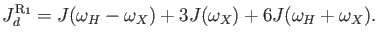
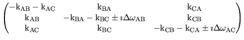

Next: The analytic R1 models Up: The numeric MMQ CPMG Previous: The NS MMQ 3-site Contents Index
This is the numerical model for 3-site exchange for proton-heteronuclear SQ, ZQ, DQ and MQ CPMG data, as derived in (Korzhnev et al., 2005a,2004a,b).
However it has been extended to allow the
A  C transition.
To simplify the optimisation space for the model as in the `NS MMQ 3-site linear' model, the assumption
R2A0 =
R2B0 =
R2C0 =
R20 has been made.
C transition.
To simplify the optimisation space for the model as in the `NS MMQ 3-site linear' model, the assumption
R2A0 =
R2B0 =
R2C0 =
R20 has been made.
The basic evolution matrices for single, zero and double quantum CPMG-type data for this model are
| (theparentequation.56) |
where
| a |
=  | |
 |
(theparentequation.57) |
The mj matrices for this model are
|  |
More information about the NS MMQ 3-site model is available from:
The relax user manual (PDF), created 2014-03-17.